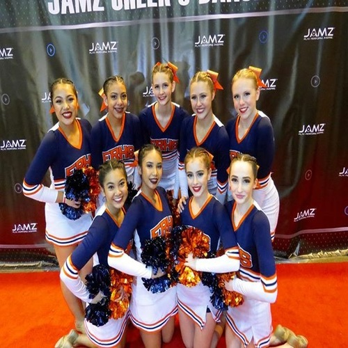
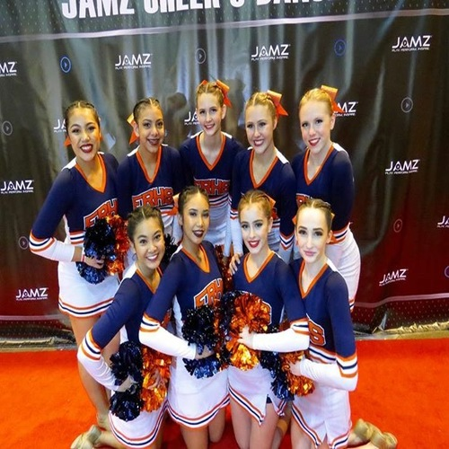

Michelle Gonzales
In my life, I have had two job experiences: one working as a dance teacher assistant, and the other working as a barista at Starbucks. Both of these careers have left a huge impact on my life and have helped shape me into the person I am today. They have taught me to improve on skills such as patience and creativeness.
My first job experience was working as a dance teacher assistant at Center Stage Dance Studio. I originally started dancing there at the age of three, and once I turned 13 years old I began teaching students of my own up until the age of 16. At this time I also was still enrolled as a student. I danced on the weekdays and during the weekends was when I would teach my classes. I taught young girls from the ages of three to ten. As a dance teacher, you are required to be friendly and kind at all times. You must also have patience, because you are dealing with a lot of young girls. During each class, I would teach the girls new dance moves, have them go through stretching routines, and prepare them for our yearly shows and competition routines. Working as a dance teacher assistant taught me a lot of patience and a passion for working with children. It also allowed for my creativity to flow, as I had to think of new combinations as well as ways to make the class more interesting for the children.
My second and current position is working as a barista at Starbucks. I started working there my senior year of high school. Being a barista requires patience, kindness, friendliness, and being a people person. As a barista, you have many other tasks to do besides making drinks for customers. You must do daily cleaning tasks, such as sweeping, mopping, taking out the trash, etc. There are also several different positions you can be put into while you are working on the job. The first and most obvious position is working on bar. This means you are crafting and creating beverages for your customers. There are usually two main bars in every Starbucks: a cafe bar and a drive thru bar. Cafe bar makes drinks for customers coming inside the store while drive thru bar makes drinks for customers coming through the drive thru. The next position is known as DTO/DTR. This is the main drive thru position. You are taking customer’s orders as they come into the drive thru and you are also handing them out at the window. During our peak times, two people are usually working this position. Other than that it is usually only a one person task. Another position is being on front register. This is the person taking orders for customers coming inside the store. Next is warming; this person is in charge of warming and grabbing food for customers. The last position is customer support. They are in charge of restocking supplies, and refilling items in the store as needed.
Experience
Dance Teacher Assistant
• Teach girls from ages three to ten
• Go over routines and dance moves
• Stretching routines
Eleanor Roosevelt Cheer Team
• Attend games
• Make posters
• Cheer sports teams
• Perform during school events
Education
UC Riverside
Eleanor Roosevelt High School
River Heights Intermediate School
Portfolio


